Por aqui começamos a nossa pequena aventura das viagens.
Nosso primeiro relato, a Maravilhosa viagem para Amazônia em outubro de 2025:
Manaus
Começamos a nossa aventura embarcando em São Paulo com destino a Manaus
A nossa chegada foi presenteada com a vista aérea do encontro das águas
Veja a história de Manaus - wikipedia
Manaus é uma grande cidade típica do Brasil. A parte central, onde estão os edifícios históricos está bem degradada. Caminhar pelo centro envolve enfrentar o calor úmido, ruas bastante sujas e o barulho do comércio popular. Isso para não falar dos cheiros, sempre muito presentes. E nem sempre muito agradáveis.
É muito interessante a história da época da borracha e todas as frutas, peixes e farinhas que fazem da cozinha amazônica uma delícia!! Falando nisso, depois vamos jantar no Banzeiro, outro dos melhores de Manaus e cujo chef é de Maravilha!!
A área ao redor do Teatro Amazonas é bem organizada...
Chegamos em Manaus por volta das 14h. E após deixarmos as malas em nosso B&B, fomos almoçar no Tambaqui de Banda.
Após o almoço, descemos em direção ao rio, passamos pelo Palacete Provincial, que ja foi sede da polícia e agora abriga varios museus.
Já na beira do rio esta o Mercado Municipal, cuja estrutura em ferro veio da França, projetada por ninguém menos que Gustave Eiffel.
Viagem de barco até Alter do Chão
Estamos embarcados no ferryboat Golfinho do Norte, que vai partir às 11h (aqui estamos 1 hora antes de Brasília).
Foram 32 horas de viagem de Manaus até Santarem
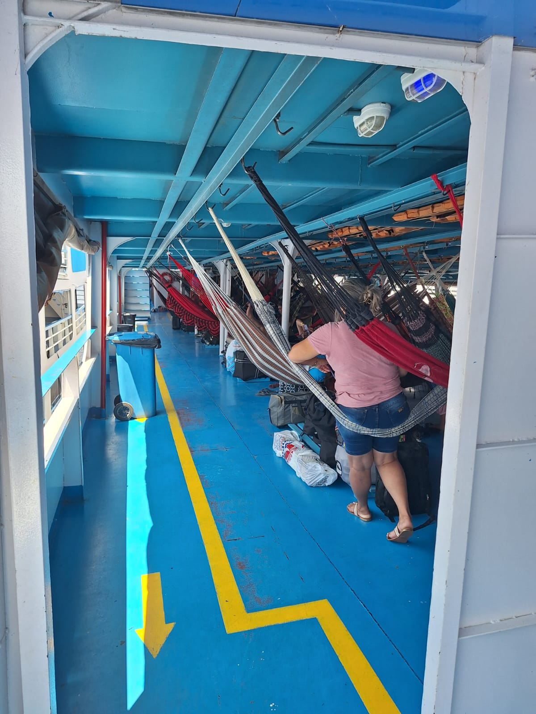
Ferryboat Golfinho do Norte
Nós estamos finalmente no estado do Pará!
Eram umas 5h15 quando chegamos em Parintins, a da festa do boi, que ainda é Amazonas. A parada é rápida, tempo suficiente para o pessoal desembarcar, embarcar e alguns vendedores entrarem no barco com coisas tipo queijo coalho, doce de leite e uns bolinhos. Disse uma senhora que embarcou em Manaus ontem que "hj tem pouca gente vendendo"...rs
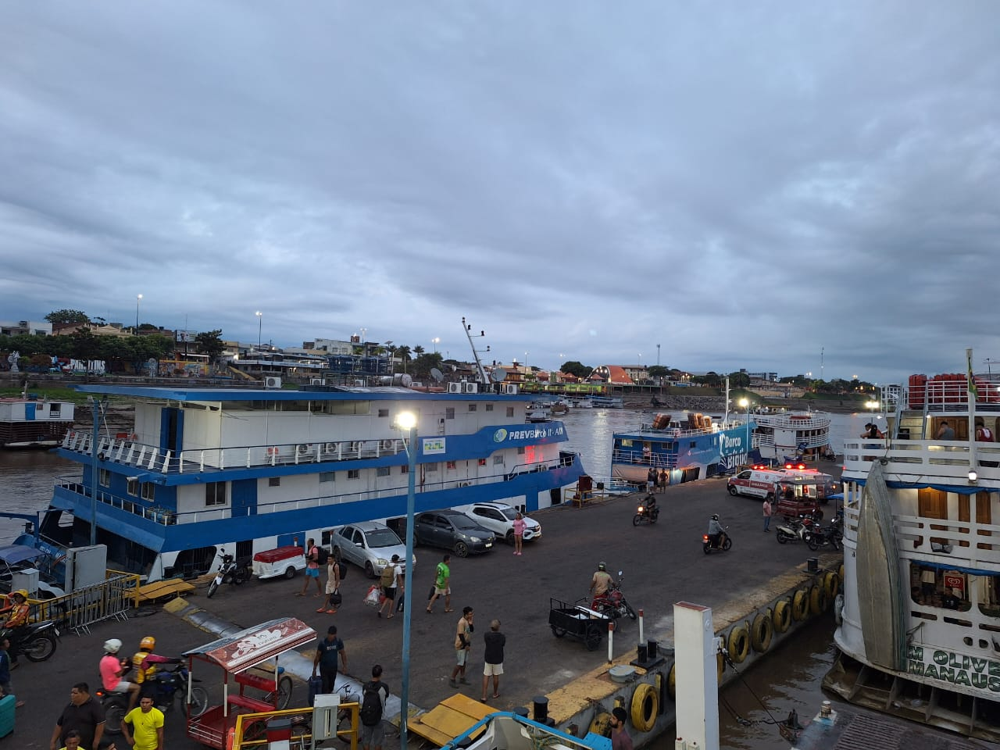
Chegada em Parintins
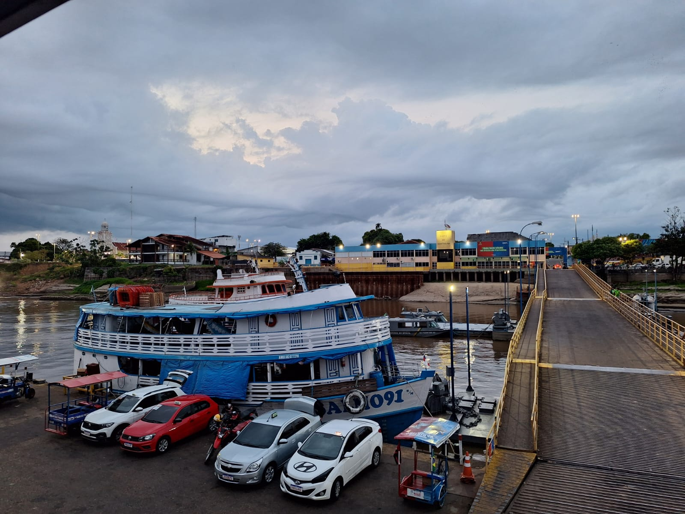
Agora, 13h20, estamos parados em Óbidos, no Pará. Entrou um monte de policial para fazer uma varredura no barco. É a polícia paraense, pelo que vimos. Talvez seja uma fiscalização fazendária, já que é a primeira parada do barco no Pará. A cidade fica um pouco mais para frente no rio. Aqui acho que é um posto policial mesmo. A grande vantagem da parada em Óbidos é que a música do deck fica desligada enquanto os policiais estão no barco! 🤣
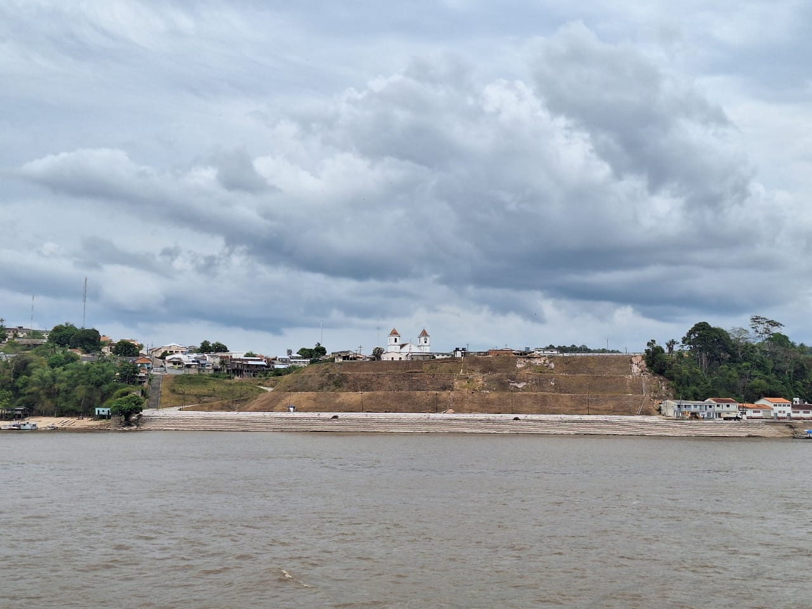
Óbidos
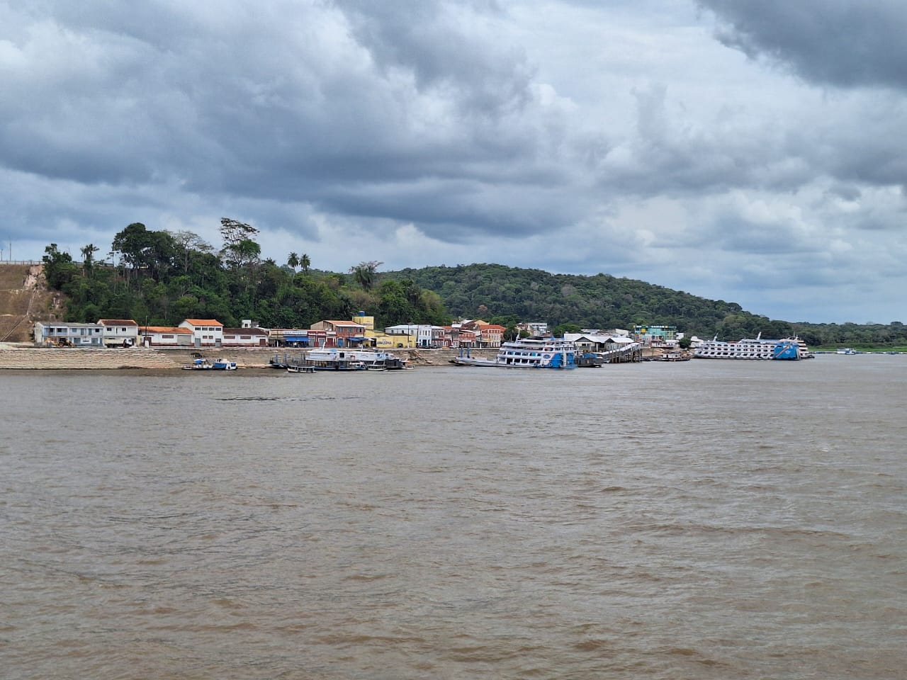
Em Alter aproveitamos para fazer alguns passeios
Hoje, 23 de outubro de 2025, fomos até o Canal do Jari, que é um braço do Amazonas que deságua no Tapajós. E, para chegar lá, atravessamos o Tapajós, que tem uns 12 km de largura nesse trecho. Sem exagero, parece mar. No canal do jari fizemos duas paradas. Uma para fazer uma trilha curta pela mata para tentar ver preguiças. Não vimos. Todo o contrário: fomos recebidos por uma penca de macacão de mão amarela mega saltitantes. Ademais, vimos algumas árvores centenárias na mata. Aí atravessamos o "mar" de volta para almoçar, muito bem, na Casa do Saulo. Comemos filhote, que é um peixe típico daqui e, ao contrário do que o nome sugere, não é pequeno...rs. Depois ds almoçar, fomos ver o encontro das águas do Tapajós com o Amazonas, que se dá bem na altura de Santarém. Não é grandioso como o encontro do Negro e do Solimões, mas é interessante ainda assim. E ai fomos pegar praia na Ponta de Pedras. Banho de rio ótimo! Água morna.
No dia seguinte, atravessamos o rio Tapajós de novo para ir até o rio Arapiuns. O rio Arapiums tem águas ainda mais azuis do que as do Tapajós e praias de areias ainda mais brancas. O almoco foi na Comunidade de Coraca, onde funciona um projeto se conservação de tartarugas da Amazônia e de tracajás pretos, além de existir um meliponário (um apiário de abelhas sem ferrão). Lugar muito bonito e organizado. Na volta, ainda no Arapiuns, paramos na Ponta Grande.
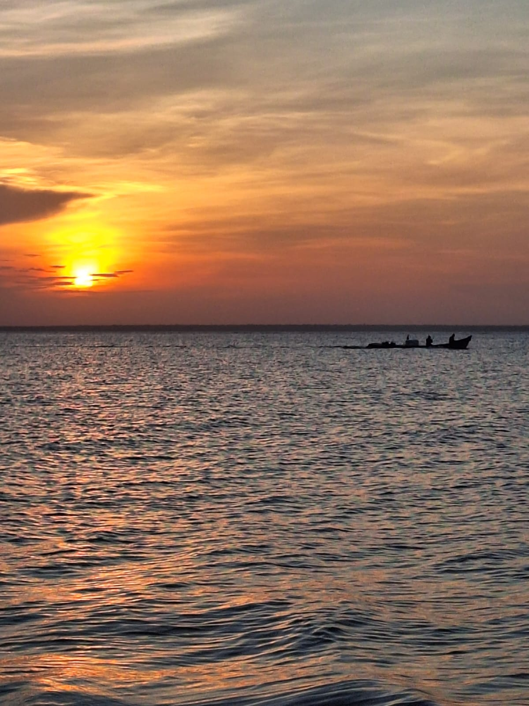
Para terminar o dia, por do sol na Ponta do Cururu (mesmo lugar de ontem, mas hj o céu estava mais limpo).
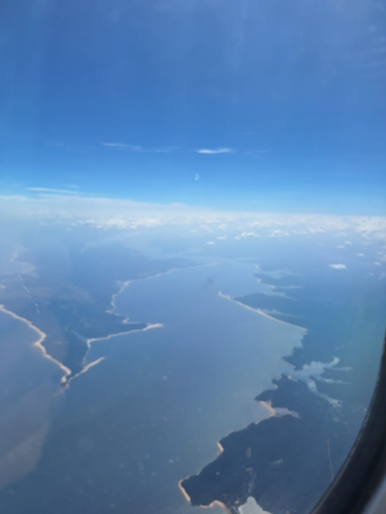
Vista aérea do rio Arapiuns
Hoje, passamos o dia na Ilha do Amor, no centrinho de Alter do Chão. Em julho do ano passado, quando viemos com os meninos, a agua batia onde eu estava fazendo filme. Não tinha essa praia toda. À noite, fizemos um programa muito legal! Pirarimbó = piracaia + carimbó. Piracaia é a forma tradicional da região de preparar peixe assado na brasa, na praia (digamos que é a versão rio Tapajós do fogo de chão...rs) e carimbó é um ritmo tradicional daqui. E junto com isso teve contação de histórias e lendas aqui da região. Muito legal! Fomos de barco até uma praia aqui do Lago Verde e lá estava a estrutura montada, com direito a saias para as sereias e chapéus para os botões e uma aula básica de carimbó para todo mundo dançar junto.
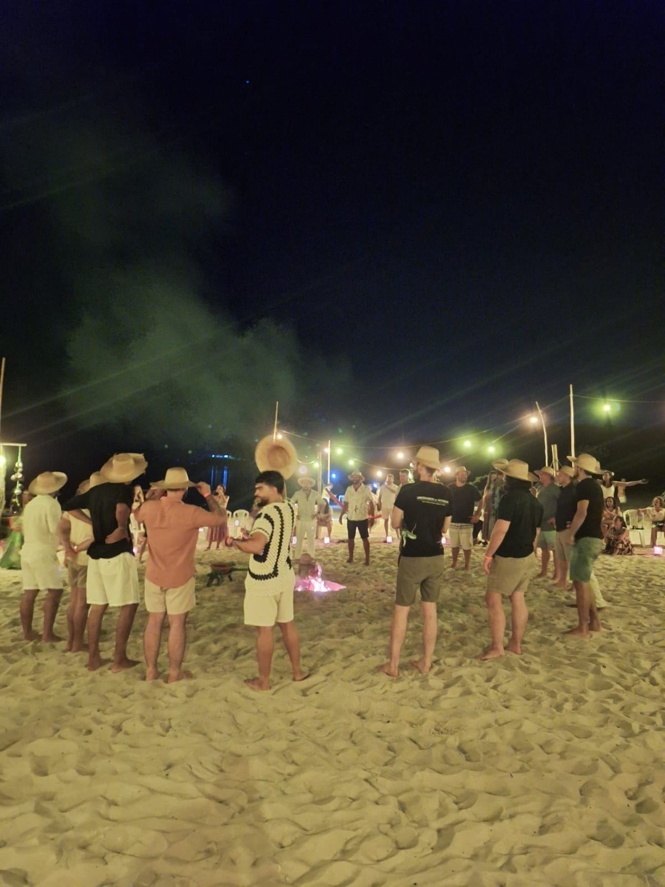
Pirarimbó
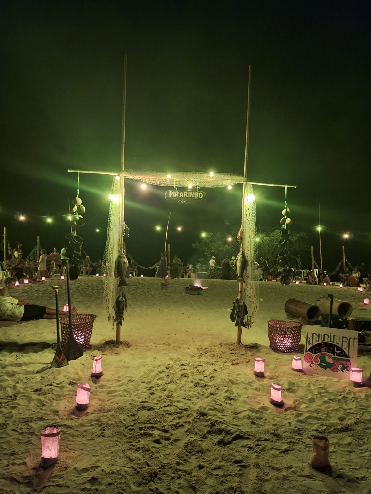
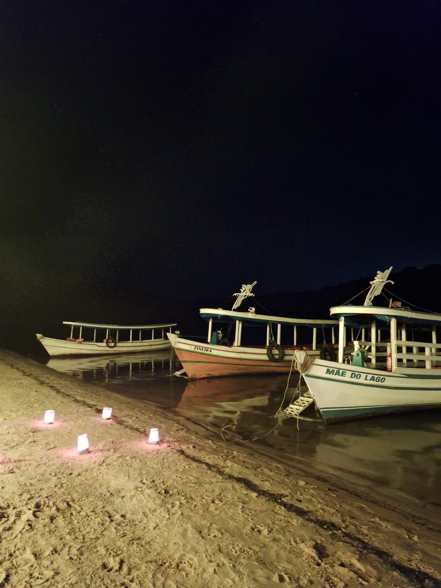
Belterra
O passeio em Belterra foi muito interessante.
Essa foi a segunda cidade fundada pela Ford na Amazônia, depois que o experimento em Fordlandia fez água por causa de um fungo que acabou com o seringal.
A produção em Belterra nunca foi tão eficiente quanto a do sudeste da Ásia, que passou a produzir látex no fim do século XIX, comeco do século XX com base em mudas brasileiras de seringueiras que foram contrabandeadas para lá por um inglês. A questão é que desde o comeco da producao na Ásia os ingleses/holandeses/franceses fizeram melhoramento genetico nas plantas e, assim, conseguiram melhorar a producao.
Mas, no período da segunda Guerra mundial, a produção asiática acabou represada pela guerra no Pacífico e assim a borracha brasileira voltou a ganhar espaço. Mas ai a guerra terminou e os asiáticos tinham um estoque enorme para desovar no mercado, o preço caiu e a coisa aqui em Belterra afundou.
Justamente, a Ford decidiu investir na Amazônia porque estava achando muito altos os preços da borracha asiática antes da segunda guerra.
Só para dar ideia de onde ficava Fordlandia e onde fica Belterra.
Belterra também tinha um hospital super moderno para a época, com 120 leitos. Mas infelizmente o prédio onde funcionava o hospital pegou fogo anos atrás.
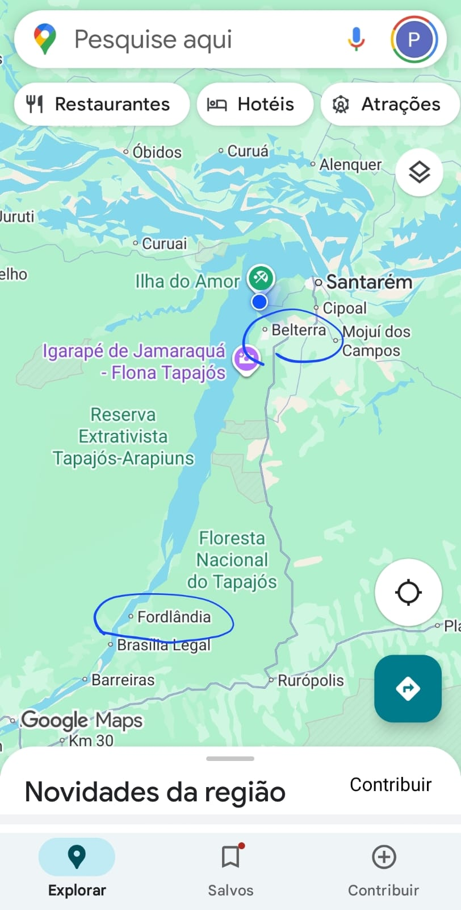
A seguir algumas fotos que tiramos da cidade de Belterra:
Uma das duas caixas d'água da cidade. Ali também tem uma sirene, que toca ate hj às 6h, 7h, 11h30, 13h e 16h30, que eram os horários que o povo que vivia na cidade na época da fundação observava.Alojamento onde moravam americanos solteiros que vinham trabalhar.
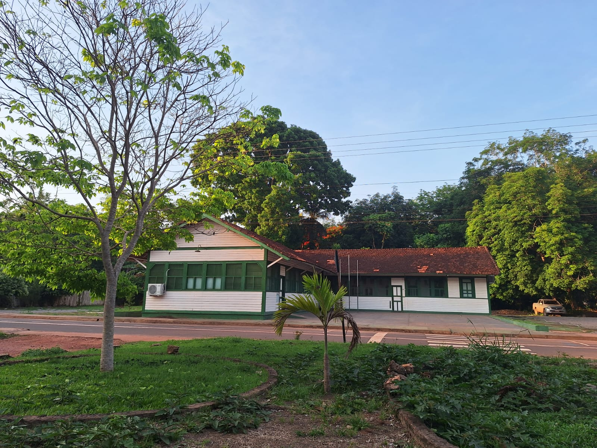
Esse era o clube social dos americanos
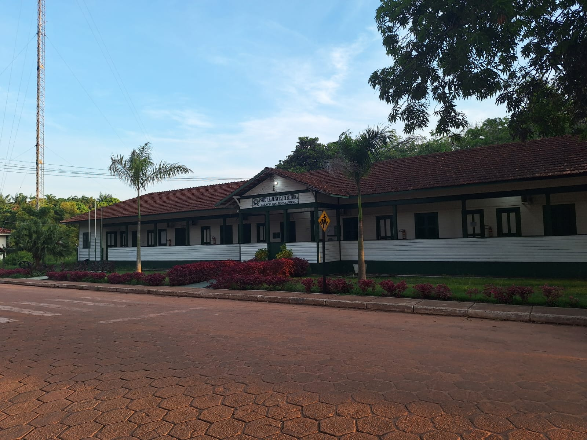
Essa era a sede administrativa da empresa e hj é a Prefeitura
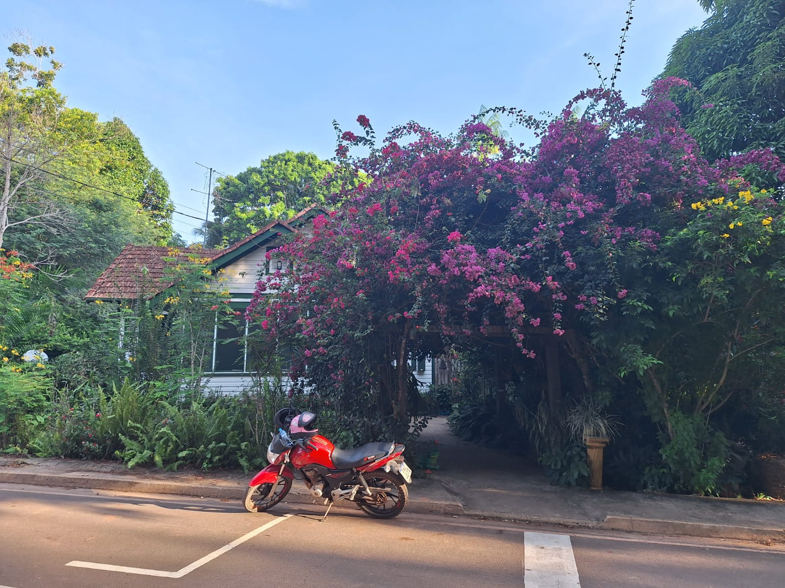
Essa ja é uma das casas onde viviam os caras mais graúdos. E parece que Getúlio Vargas se hospedou nessa casa em uma visita que fez a Belterra nos idos de 1943, se não me engano.
Santarem - a viagem chega ao fim
Agora de manhã demos uma olhada rápida na cidade. Passamos no mercadão e na orla. Fizemos a feira! Estamos levando farinha, feijão manteguinha, castanhas, cachaça...rs


 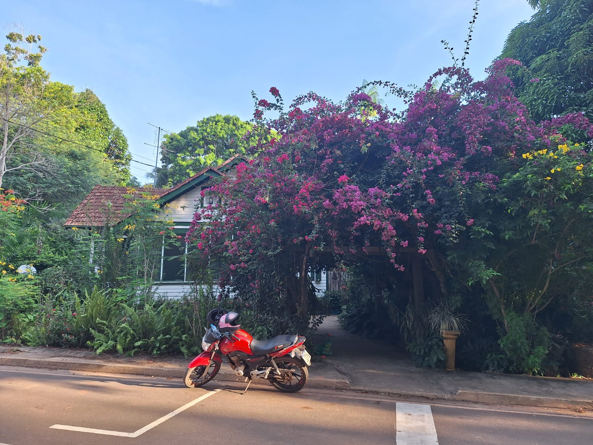
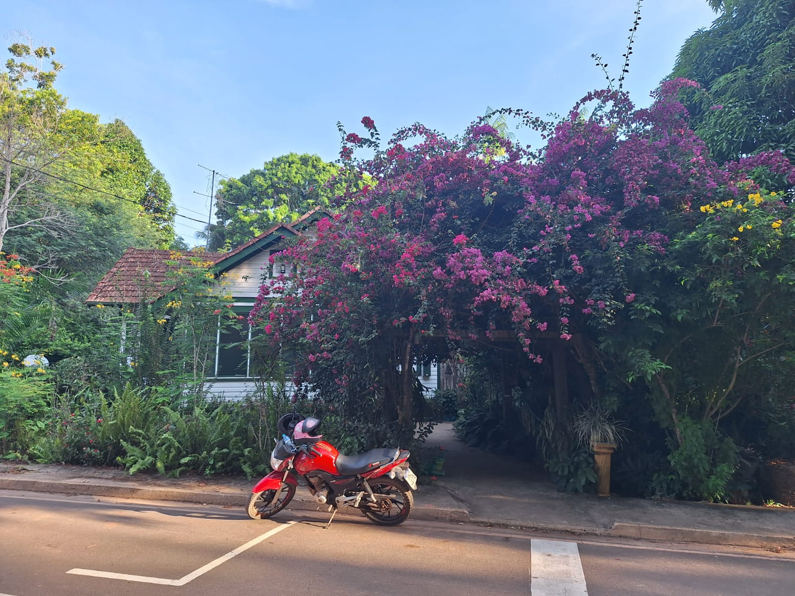